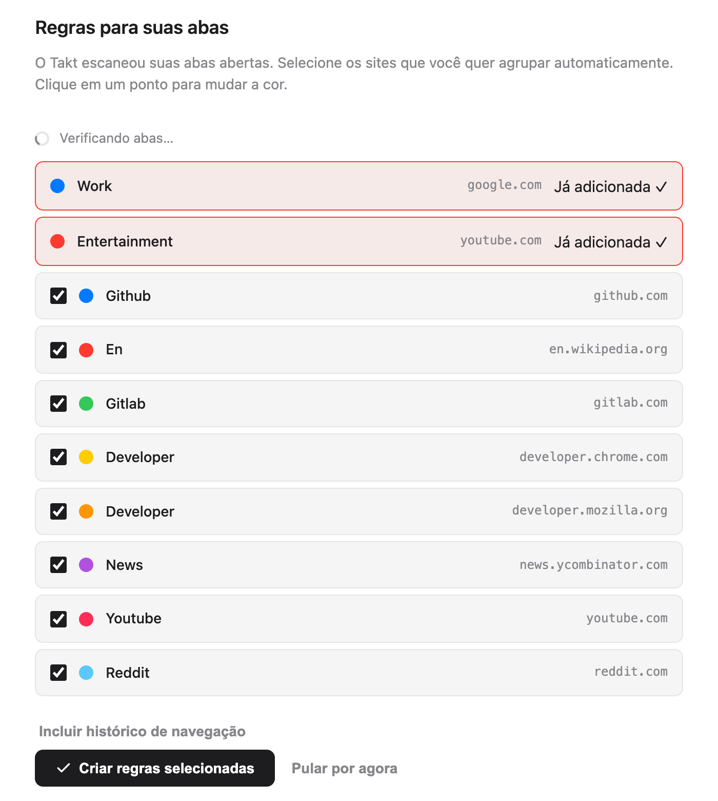
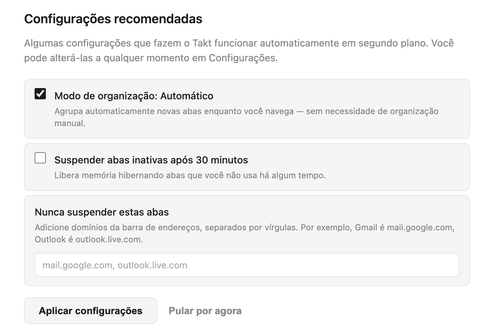
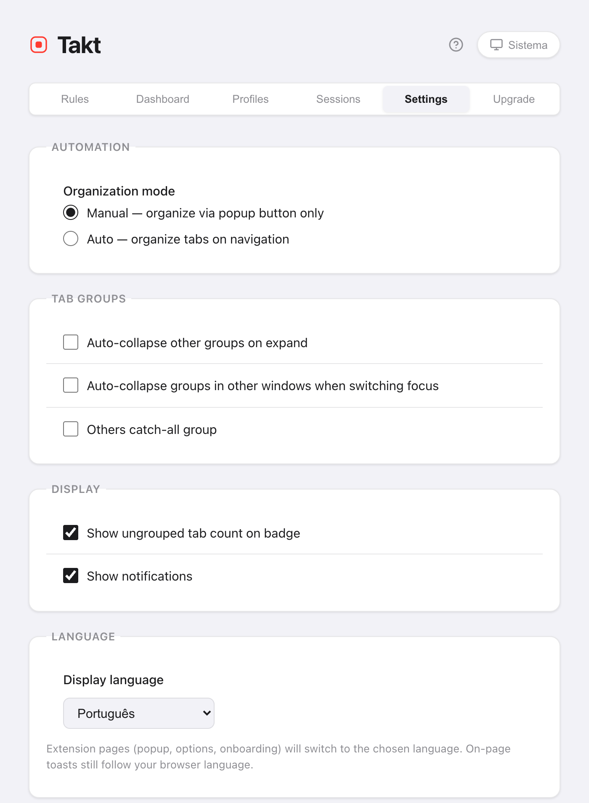

Resposta curta: a página de boas-vindas faz a configuração por você.
- Ela lista os sites das suas abas abertas. Cada um que você marca vira uma regra.
- O Takt agrupa suas abas assim que as regras existem.
- O popup reúne os controles do dia a dia. A página de opções reúne regras, configurações e planos.
- Sem conta. O plano gratuito inclui 5 regras.
O que acontece quando instalo o Takt?
Instale o Takt pela Chrome Web Store. Duas coisas acontecem:
- O Takt adiciona duas regras iniciais: Work (google.com, azul) e Entertainment (youtube.com, vermelho).
- Uma página de boas-vindas abre numa nova aba.
Fixe o Takt pelo menu de extensões do Chrome (o ícone de quebra-cabeça) para ter o popup a um clique.
Como escolho minhas primeiras regras?
A página de boas-vindas analisa suas abas abertas e lista os 8 sites que você mais tem abertos. As duas regras iniciais ficam no topo, marcadas como Já adicionada.
- Desmarque os sites que você não quer agrupar. Todos começam marcados.
- Clique num ponto colorido para alternar entre as 8 cores de grupo do Chrome.
- Clique em Criar regras selecionadas.
O Takt cria as regras e agrupa suas abas abertas na mesma hora. A página mostra o resultado, por exemplo "12 abas agrupadas em 4 grupos."
No plano gratuito, as duas regras iniciais contam para o limite de 5 regras. Ou seja, cabem mais 3. O Takt fica com os 3 primeiros sites marcados e avisa quantos deixou de fora. Se faz diferença quais 3 entram, desmarque os outros antes.

Devo deixar o Takt analisar meu histórico de navegação?
É opcional. Clique em Incluir histórico de navegação e o Chrome pede a permissão de histórico. Se você permitir, o Takt soma à contagem as visitas dos últimos 7 dias, com peso pela frequência com que você visitou cada site, e refaz a lista.
A contagem roda no seu navegador. Nada é enviado para lugar nenhum. Se você pular, as sugestões vêm só das abas abertas.
Quais configurações recomendadas devo manter?
| Configuração | Na página de boas-vindas | O que faz |
|---|---|---|
| Modo de organização: Automático | Marcada | As novas abas são agrupadas enquanto carregam. Desmarcada (Manual), o Takt só agrupa quando você clica em Agrupar abas. |
| Suspender abas inativas após 30 minutos | Desmarcada | Descarrega abas ociosas há 30 minutos para liberar memória. Elas continuam na barra de abas. |
| Nunca suspender estas abas | Vazio | Domínios que nunca são descarregados, como mail.google.com. |
Clique em Aplicar configurações ou Concluído e o Takt salva as caixas exatamente como estão marcadas. Você pode mudar as três depois em Settings.

Podem aparecer mais duas seções. Se a IA no dispositivo do Chrome não estiver disponível, um botão abre as configurações de IA do Chrome, e a página verifica de novo quando você volta. A página também apresenta o Quick Switch (Alt+Shift+Space), que é um recurso Premium.
Posso ver a página de boas-vindas de novo?
Sim. Abra a página de opções, vá em Settings → Support & Feedback e clique em Replay welcome tour. A página analisa suas abas de novo, então você pode adicionar regras para sites que começou a usar desde então.
Qual modo de agrupamento devo escolher?
Abra o popup. O painel Início tem a opção Modo de agrupamento, com quatro escolhas:
| Modo | Escolha se |
|---|---|
| Por regras (padrão) | Você quer os mesmos sites no mesmo grupo com nome, sempre. |
| Por categoria | Você não quer escrever regras. 20 categorias fixas, como Development e News. |
| Por IA | Você quer grupos por assunto. O modelo no dispositivo do Chrome dá os nomes. |
| Nenhum | Você quer a prevenção de duplicatas e as outras ferramentas, mas sem agrupamento. |
Categoria e IA são gratuitos até 5 grupos. Detalhes em agrupar abas por categoria ou com IA.
Como escrevo minha própria regra?
Clique no ícone de engrenagem do popup para abrir a página de opções. Em Rules, clique em New Rule, adicione uma condição como URL · Domain · github.com, dê um nome ao grupo, escolha uma cor e salve. O guia completo: como agrupar abas automaticamente no Chrome.
Onde fica cada coisa no Takt?
O popup é para o dia a dia. Ele tem seis painéis:
| Painel do popup | O que tem nele |
|---|---|
| Início | A regra que corresponde à aba atual, o modo de agrupamento, ações rápidas como Agrupar abas e Recolher tudo |
| Regras | Todas as regras e um link para gerenciá-las |
| Sessões | Espaços de trabalho salvos Premium |
| Hibernar | As abas que você hibernou, prontas para acordar |
| Insights | Sugestões de regras a partir dos sites que você usa muito |
| Tabs | Todas as abas abertas por grupo, com uma caixa de pesquisa |

A página de opções é para a configuração. Suas abas são Rules, Dashboard (memória por aba e por grupo, Premium), Profiles (Premium), Sessions (Premium), Settings e Upgrade.
Como mudo o idioma ou o tema do Takt?
Idioma. Vá em Settings → Language → Display language. Escolha English, Français, Español, Italiano, Deutsch ou Português, ou Use browser default (o padrão do navegador). A escolha não depende do idioma do próprio Chrome. O popup, a página de opções e a página de boas-vindas mudam; a página recarrega para aplicar. Os pequenos avisos que o Takt mostra dentro das páginas da web continuam no idioma do Chrome.
Tema. Clique no botão de tema no cabeçalho do popup ou da página de opções. Ele alterna entre Sistema, Claro e Escuro. Sistema segue o seu sistema operacional. As duas escolhas são salvas com as suas outras configurações.

O que a configuração inicial não faz
- As sugestões são site por site. A página de boas-vindas cria uma regra de domínio por site. Para padrões como "todos os pull requests", escreva você mesmo regras glob ou regex (Premium).
- No modo Por regras, sites desconhecidos ficam sem grupo. Adicione uma regra ou mude para Por categoria ou Por IA.
- O plano gratuito para em 5 regras. Veja o que o Free e o Premium incluem.
Dois minutos entre instalar e ter as abas agrupadas.
Adicionar o Takt ao Chrome, grátisPerguntas frequentes
O Takt é gratuito?
Sim. O plano gratuito inclui 5 regras, agrupamento por categoria e por IA até 5 grupos, prevenção de duplicatas, suspensão automática e as ações rápidas do popup. O Premium custa US$ 3/mês ou US$ 30/ano.
Preciso de uma conta para usar o Takt?
Não. O Takt não tem conta. Suas regras e configurações ficam guardadas no Chrome. Veja o que o Takt faz com seus dados.
Como abro a página de boas-vindas de novo?
Página de opções → Settings → Support & Feedback → Replay welcome tour.
O Takt pode usar um idioma diferente do Chrome?
Sim. Em Settings → Language, escolha um de 6 idiomas. O popup, as opções e a página de boas-vindas mudam; os avisos dentro das páginas continuam no idioma do Chrome.